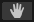

(5) The Scene view is where we adjust the Position and other Transforms of our Game Objects. (5) The Scene view is where we adjust the Position and other Transforms of our Game Objects.
While Objects should only ever be selected in the Hierarchy, they can be Transformed (Moved, Rotated, and Scaled) in the Scene view.
The buttons for Move, Rotate and Scale
are in the upper left corner of the interface, and can also be accessed with these keyboard shortcuts:
Move [w]  ,
Rotate [e] ,
Rotate [e]  ,
Scale [r] ,
Scale [r] 
Also in the upper left corner is a hand icon  for panning in the scene.
The shortcut for panning a Unity scene is to click-and-hold the middle mouse button.
To zoom in and out of your Scene, use your middle mouse button as a scrollwheel. |

In a 2D game, absolutely every Object except for the Camera MUST be set to Position Z = 0.
This is true for all parents and all children.
The Camera should be set to Position Z = -10, always.
If collisions are not working in game, check that all non-camera objects are set to Position Z = 0.
A quick way to see if any objects are NOT at Position Z = 0 is to temporarily turn off the "2D" button at top of Scene view, and Orbit around:
[Alt/Option]+MiddleMouse Click and Drag.
In 3D mode there is also a world-orbit gizmo in the upper-right corner of the Scene, to choose view sides (click a color cone).
Also useful in 3D is the Display Mode rolldown (directly below the name tab).
The default "Shaded" mode is what we typically want.
In some circumstances it is helpful to switch to "wireframe" or mode to view the relative positions of obects. |
|
 UNITY - Intro to the Main Panels
UNITY - Intro to the Main Panels

 .
.  RightClick the empty space on the right-hand side
RightClick the empty space on the right-hand side


{kind=link}